Next: Large spanwise aspect ratios
Up: Extreme spanwise aspect ratios
Previous: Extreme spanwise aspect ratios
Contents
Small spanwise aspect ratios
For small spanwise aspect ratios,
but not uniformly. The region of nonuniformity adjacent to the hot
wall, 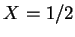, may be treated by the method of matched asymptotic
expansions (Van Dyke 1964, ch. 5);
i.e. introducing a coordinate
there stretched by the factor suggested by Stokes's (1899)
estimate of the length scale for the influence of the short walls:
(as illustrated in figure 7.3a)
Figure 7.3:
The stretched coordinates (a) 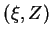 and (b)
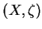 for the viscous layers adjacent to the hot wall for small  and the front wall for large , respectively.
and the front wall for large , respectively.
| 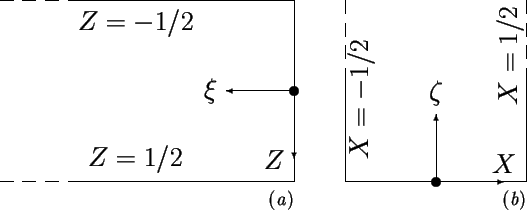 |
and assuming an asymptotic expansion there of the form:
The 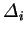 form an asymptotic sequence to be determined
along with the 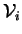 in the course of the solution.
The series (7.38) is called the inner solution.
Any attempt to extend the basic solution, 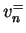, in terms of  and
and  , to form an outer solution with a series
, to form an outer solution with a series
leads to the homogeneous problems
for which
the unique solution satisfying the no-slip conditions at  is
is
regardless of the choice of 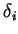. Thus
For nondegenerate 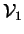, choose
whence satisfies
subject to
|
 |
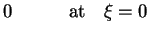 |
(7.45) |
|
|
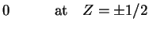 |
(7.46) |
and a condition arising from the asymptotic matching process:
Noticing that the limiting form (7.47) satisfies the field
equation (7.44) and the boundary conditions at the end-walls
(7.46), take it as a particular integral and solve by
Fourier's method to obtain:
| 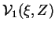 |
|
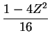 |
(7.48) |
| |
 |
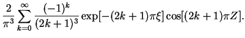 |
|
For
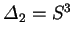, 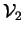 satisfies
subject to
|
|
|
(7.50) |
|
|
|
(7.51) |
and a condition arising from the asymptotic matching process:
Here the limiting form (7.52) satisfies the field
equation (7.49) and all the boundary conditions; (7.50),
(7.51) and (7.52);
it must itself, therefore, be the solution.
Further terms in the series (7.39) lead only to trivial
solutions, so that the inner asymptotic expansion to any order is:
 |
 |
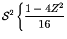 |
(7.53) |
| |
 |
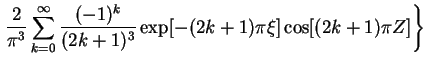 |
|
| |
|
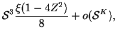 |
|
| |
|
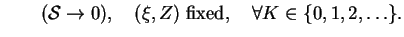 |
|
Rewriting the inner solution (7.53) in terms of 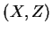
coordinates gives:
 |
(7.54) |
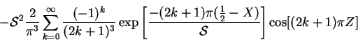
which satisfies the full field equation (7.20)
for all values of
 , and all the boundary conditions
except 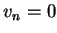 at the cold wall (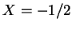).
, and all the boundary conditions
except 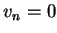 at the cold wall (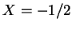).
To convert the inner solution (7.54) into a full solution
the effect of the cold wall msut be incorporated. A simple
way to do this is to subtract the difference between itself and the known
full solution (7.28).
The same solution can also be used near the cold wall
by taking advantage of the odd symmetry of  with respect to .
with respect to .
Next: Large spanwise aspect ratios
Up: Extreme spanwise aspect ratios
Previous: Extreme spanwise aspect ratios
Contents
Geordie McBain
2001-01-27